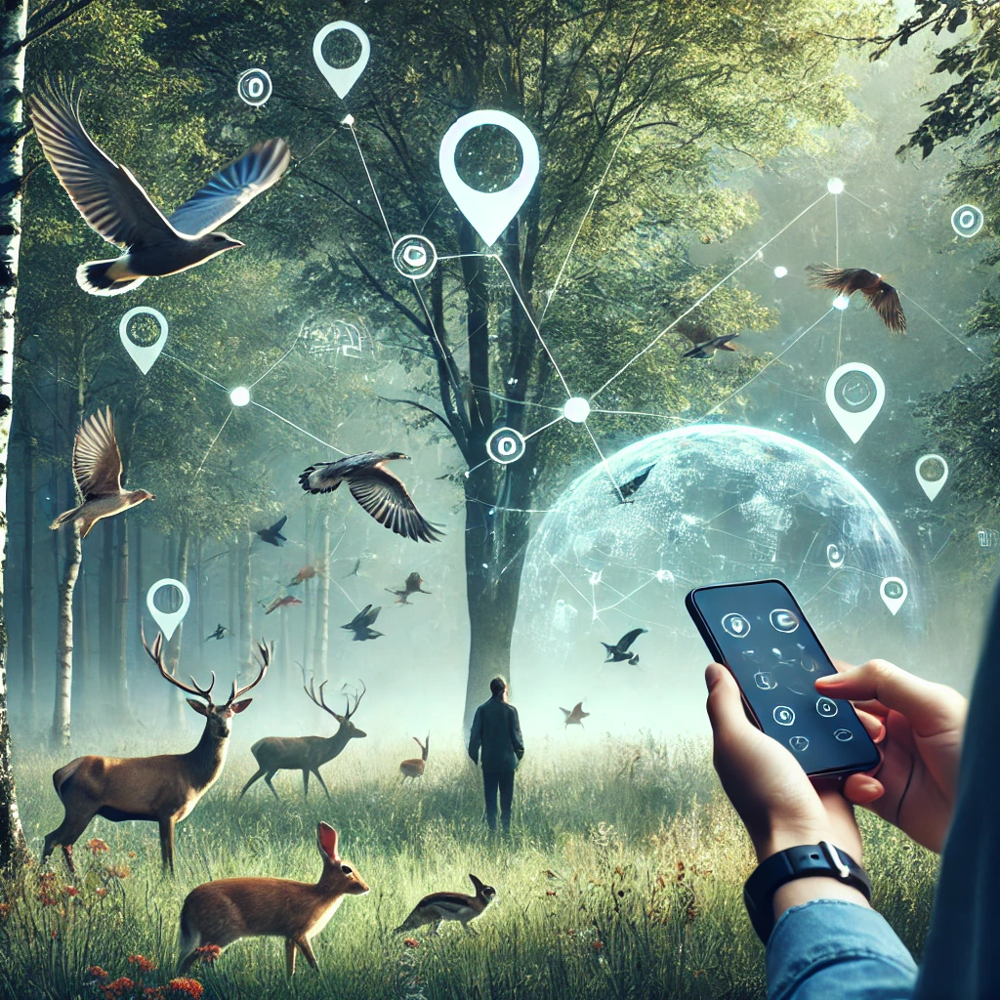
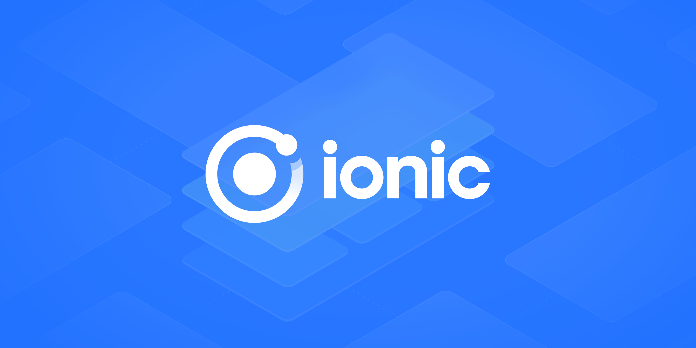

## Inhalt * Idee * Programmiersprache und Frameworks * Prototyp * Challenges * Ausblick * Acknowledgements * Links Note: kurz den inhalt vorstellen --- ## Idee ---- Das Kernelement von jedem <span style="display: block;"></span>Geo-Informatik-Projekt <span style="font-size: 0.4em;">*Abbildung: Generiert mit - DALL-E*</span> ---- Möglichkeiten <span style="font-size: 0.4em;">*Abbildung: Generiert mit - DALL-E*</span> ---- Das will ich auch können! <span style="font-size: 0.4em;">*Abbildung: Generiert mit - DALL-E*</span> ---- WildTierSichtungsApp  <span style="font-size: 0.4em;">*Abbildung: Generiert mit - DALL-E*</span> --- ## Programmiersprache und Frameworks ---- ## Programmiersprache und Frameworks ---- ### Frontend  <span style="font-size: 0.4em;">*Abbildung: von <a href="https://github.com/ionic-team/ionic-framework" target="_blank">https://github.com/ionic-team/ionic-framework</a>*</span> Note: Das Frontend wurde mit dem **Ionic Framework** entwickelt. Ionic ermöglicht die Erstellung von Cross-Platform-Apps für iOS und Android. Es basiert auf **HTML, CSS und JavaScript**. ---- ### Backend <img src="images/go_logo.jpg" style="width: 50%; margin-bottom: -90px;"> <span style="font-size: 0.4em;">*Abbildung: <a href="https://go.dev/blog/go-brand" target="_blank">https://go.dev/blog/go-brand</a>*</span> Note: Das Backend wurde in **Go (Golang)** programmiert. Go ist effizient, schnell und eignet sich hervorragend für REST-APIs. Es sorgt für **skalierbare und performante Anwendungen**. ---- ### WebMap <img src="images/Google_Maps_Logo.png" style="width: 30%; margin-bottom: -40px;"> <span style="font-size: 0.4em;">*Abbildung: <a href="https://en.m.wikipedia.org/wiki/File:Google_Maps_Logo_2020.svg" target="_blank">https://en.m.wikipedia.org</a>*</span> Note: Die **Google Maps API** visualisiert die Wildtiersichtungen auf einer Karte. Sie bietet Funktionen wie Marker, Routenplanung und Geocoding. ---- ### Datenbank <img src="images/mariadb.png" style="width: 40%; margin-bottom: -50px;"> <span style="font-size: 0.4em;">*Abbildung: <a href="https://github.com/mariadb-corporation" target="_blank">https://github.com/mariadb-corporation</a>*</span> Note: Die Daten werden in **MariaDB** gespeichert. MariaDB ist schnell, zuverlässig und eignet sich für relationale Datenbanken. Hier liegen die Wildtiersichtungen und weitere App-Daten. --- ## Prototyp ---- Logo <img src="images/logo_app.png" style="width: 30%;"> <span style="font-size: 0.4em;">*Abbildung: Logo - Designed by Annalisa Berger*</span> ---- Datenbankstruktur <img src="images/db_structure.png" style="width: 40%; margin-bottom: -50px;"> <span style="font-size: 0.4em;">*Abbildung: Kreiert mit DBeaver*</span> ---- QR-Code, um die App zu installieren <br> <img src="images/qr_code_app.png" style="width: 30%;"> ---- Demo <div style="border: 1px solid black; padding: 1px; display: inline-block;"> <iframe src="https://wildtierapp.juliankraft.ch/app/" width="95%" height="500px" allow="geolocation"></iframe> </div> ---- Data View <iframe src="https://wildtierapp.juliankraft.ch/inframe" width="100%" height="500px"></iframe> ---- Beispiel für Datenbezug mit Python: ```python import mysql.connector import json # Lade die Datenbankverbindungsdetails aus der JSON-Datei with open('./db_setup/db_config.json', 'r') as config_file: config = json.load(config_file) # Verbindung zur MariaDB-Datenbank herstellen connection = mysql.connector.connect( host=config['host'], port=config['port'], user=config['user'], password=config['password'], database=config['database'] ) # Funktion, um Daten aus der Datenbank abzurufen def get_data(statement): cursor = connection.cursor() try: cursor.execute(statement) data = cursor.fetchall() return data except mysql.connector.Error as e: print(f"Fehler beim Abrufen der Daten: {e}") finally: cursor.close() # Datenbeispiel abrufen data = get_data("SELECT * FROM sichtungen;") ``` --- ## Challenges * Neue Programmiersprachen * Neue Frameworks * Serverkonfiguration * Datenbankkonfiguration * Login und Authentifizierung --- ## Ausblick * Code besser strukturieren und kommentieren * Mehr Funktionen hinzufügen: * Bilder hochladen bzw. aufnehmen * Dateneinsicht in der App ermöglichen * Einträge bearbeiten und löschen * Design verbessern <br> * Zuerst aber – eine tatsächliche Anwendung finden --- ## Acknowledgements <br> Danke an Ramon Ott für die Unterstützung bei der Umsetzung dieses Projekts. <br><br> Danke an Annalisa Berger für das Design des Logos. --- ## Links Presentation:<br> <a href="https://wildtierapp.juliankraft.ch/presentation" target="_blank">wildtierapp.juliankraft.ch/presentation</a> Prototyp:<br> <a href="https://wildtierapp.juliankraft.ch/app/" target="_blank">WebApp - Installation</a><br> <a href="https://wildtierapp.juliankraft.ch/" target="_blank">Datensichtung</a> GitHub Repos:<br> <a href="https://github.com/juliankraft/WildtierSichtungsApp_front" target="_blank">Frontend</a><br> <a href="https://github.com/juliankraft/WildtierSichtungsApp_back" target="_blank">Backend</a>